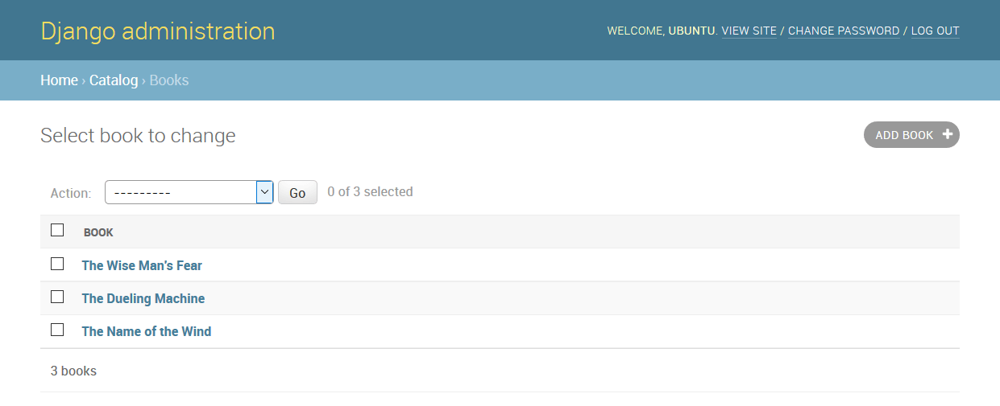
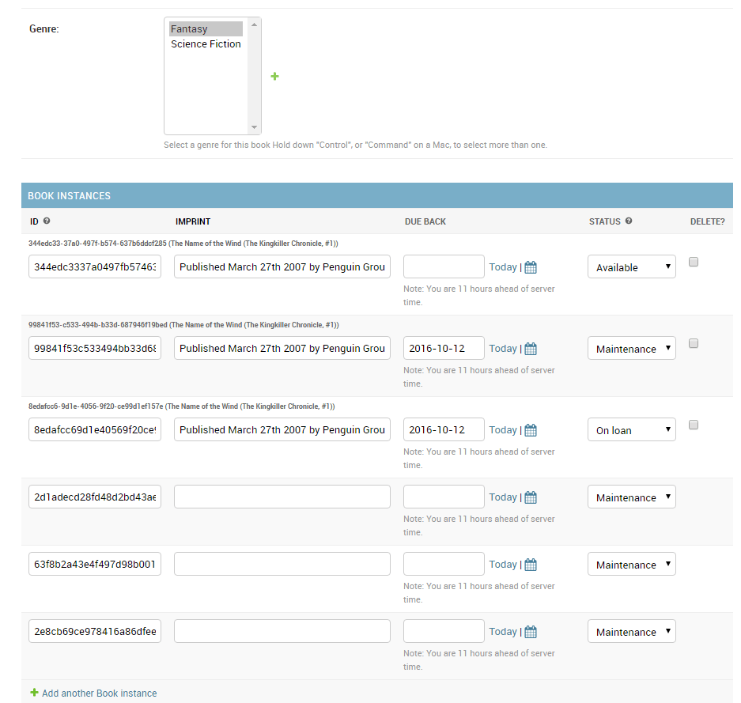

Now that we've created models for the LocalLibrary website, we'll use the Django Admin site to add some "real" book data. First we'll show you how to register the models with the admin site, then we'll show you how to login and create some data. At the end of the article we will show some of the ways you can further improve the presentation of the Admin site.
| Prerequisites: | First complete: Django Tutorial Part 3: Using models. |
|---|---|
| Objective: | To understand the benefits and limitations of the Django admin site, and use it to create some records for our models. |
The Django admin application can use your models to automatically build a site area that you can use to create, view, update, and delete records. This can save you a lot of time during development, making it very easy to test your models and get a feel for whether you have the right data. The admin application can also be useful for managing data in production, depending on the type of website. The Django project recommends it only for internal data management (i.e. just for use by admins, or people internal to your organization), as the model-centric approach is not necessarily the best possible interface for all users, and exposes a lot of unnecessary detail about the models.
All the configuration required to include the admin application in your website was done automatically when you created the skeleton project (for information about actual dependencies needed, see the Django docs here). As a result, all you must do to add your models to the admin application is to register them. At the end of this article we'll provide a brief demonstration of how you might further configure the admin area to better display our model data.
After registering the models we'll show how to create a new "superuser", login to the site, and create some books, authors, book instances, and genres. These will be useful for testing the views and templates we'll start creating in the next tutorial.
First, open admin.py in the catalog application (/locallibrary/catalog/admin.py). It currently looks like this — note that it already imports django.contrib.admin:
from django.contrib import admin # Register your models here.
Register the models by copying the following text into the bottom of the file. This code imports the models and then calls admin.site.register to register each of them.
from .models import Author, Genre, Book, BookInstance admin.site.register(Book) admin.site.register(Author) admin.site.register(Genre) admin.site.register(BookInstance)
This is the simplest way of registering a model, or models, with the site. The admin site is highly customisable, and we'll talk more about the other ways of registering your models further down.
In order to log into the admin site, we need a user account with Staff status enabled. In order to view and create records we also need this user to have permissions to manage all our objects. You can create a "superuser" account that has full access to the site and all needed permissions using manage.py.
Call the following command, in the same directory as manage.py, to create the superuser. You will be prompted to enter a username, email address, and strong password.
python3 manage.py createsuperuser
Once this command completes a new superuser will have been added to the database. Now restart the development server so we can test the login:
python3 manage.py runserver
To login to the site, open the /admin URL (e.g. http://127.0.0.1:8000/admin) and enter your new superuser userid and password credentials (you'll be redirected to the login page, and then back to the /admin URL after you've entered your details).
This part of the site displays all our models, grouped by installed application. You can click on a model name to go to a screen that lists all its associated records, and you can further click on those records to edit them. You can also directly click the Add link next to each model to start creating a record of that type.
Click on the Add link to the right of Books to create a new book (this will display a dialog much like the one below). Note how the titles of each field, the type of widget used, and the help_text (if any) match the values you specified in the model.
Enter values for the fields. You can create new authors or genres by pressing the + button next to the respective fields (or select existing values from the lists if you've already created them). When you're done you can press SAVE, Save and add another, or Save and continue editing to save the record.
Note: At this point we'd like you to spend some time adding a few books, authors, and genres (e.g. Fantasy) to your application. Make sure that each author and genre includes a couple of different books (this will make your list and detail views more interesting when we implement them later on in the article series).
When you've finished adding books, click on the Home link in the top bookmark to be taken back to the main admin page. Then click on the Books link to display the current list of books (or on one of the other links to see other model lists). Now that you've added a few books, the list might look similar to the screenshot below. The title of each book is displayed; this is the value returned in the Book model's __str__() method that we specified in the last article.

From this list you can delete books by selecting the checkbox next to the book you don't want, selecting the delete... action from the Action drop-down list, and then pressing the Go button. You can also add new books by pressing the ADD BOOK button.
You can edit a book by selecting its name in the link. The edit page for a book, shown below, is almost identical to the "Add" page. The main differences are the page title (Change book) and the addition of Delete, HISTORY and VIEW ON SITE buttons (this last button appears because we defined the get_absolute_url() method in our model).
Now navigate back to the Home page (using the Home link in the breadcrumb trail) and then view the Author and Genre lists — you should already have quite a few created from when you added the new books, but feel free to add some more.
What you won't have is any Book Instances, because these are not created from Books (although you can create a Book from a BookInstance — this is the nature of the ForeignKey field). Navigate back to the Home page and press the associated Add button to display the Add book instance screen below. Note the large, globally unique Id, which can be used to separately identify a single copy of a book in the library.
Create a number of these records for each of your books. Set the status as Available for at least some records and On loan for others. If the status is not Available, then also set a future Due back date.
That's it! You've now learned how to set up and use the administration site. You've also created records for Book, BookInstance, Genre, and Author that we'll be able to use once we create our own views and templates.
Django does a pretty good job of creating a basic admin site using the information from the registered models:
__str__() method, and linked to detail views/forms for editing. By default, this view has an action menu at the top that you can use to perform bulk delete operations on records.You can further customise the interface to make it even easier to use. Some of the things you can do are:
In this section we're going to look at a few changes that will improve the interface for our LocalLibrary, including adding more information to Book and Author model lists, and improving the layout of their edit views. We won't change the Language and Genre model presentation because they only have one field each, so there is no real benefit in doing so!
You can find a complete reference of all the admin site customisation choices in The Django Admin site (Django Docs).
To change how a model is displayed in the admin interface you define a ModelAdmin class (which describes the layout) and register it with the model.
Let's start with the Author model. Open admin.py in the catalog application (/locallibrary/catalog/admin.py). Comment out your original registration (prefix it with a #) for the Author model:
# admin.site.register(Author)
Now add a new AuthorAdmin and registration as shown below.
# Define the admin class
class AuthorAdmin(admin.ModelAdmin):
pass
# Register the admin class with the associated model
admin.site.register(Author, AuthorAdmin)
Now we'll add ModelAdmin classes for Book, and BookInstance. We again need to comment out the original registrations:
# admin.site.register(Book) # admin.site.register(BookInstance)
Now to create and register the new models; for the purpose of this demonstration, we'll instead use the @register decorator to register the models (this does exactly the same thing as the admin.site.register() syntax):
# Register the Admin classes for Book using the decorator
@admin.register(Book)
class BookAdmin(admin.ModelAdmin):
pass
# Register the Admin classes for BookInstance using the decorator
@admin.register(BookInstance)
class BookInstanceAdmin(admin.ModelAdmin):
pass
Currently all of our admin classes are empty (see pass) so the admin behavior will be unchanged! We can now extend these to define our model-specific admin behavior.
The LocalLibrary currently lists all authors using the object name generated from the model __str__() method. This is fine when you only have a few authors, but once you have many you may end up having duplicates. To differentiate them, or just because you want to show more interesting information about each author, you can use list_display to add additional fields to the view.
Replace your AuthorAdmin class with the code below. The field names to be displayed in the list are declared in a tuple in the required order, as shown (these are the same names as specified in your original model).
class AuthorAdmin(admin.ModelAdmin):
list_display = ('last_name', 'first_name', 'date_of_birth', 'date_of_death')
Now navigate to the author list in your website. The fields above should now be displayed, like so:
For our Book model we'll additionally display the author and genre. The author is a ForeignKey field (one-to-many) relationship, and so will be represented by the __str__() value for the associated record. Replace the BookAdmin class with the version below.
class BookAdmin(admin.ModelAdmin):
list_display = ('title', 'author', 'display_genre')
Unfortunately we can't directly specify the genre field in list_display because it is a ManyToManyField (Django prevents this because there would be a large database access "cost" in doing so). Instead we'll define a display_genre function to get the information as a string (this is the function we've called above; we'll define it below).
Note: Getting the genre may not be a good idea here, because of the "cost" of the database operation. We're showing you how because calling functions in your models can be very useful for other reasons — for example to add a Delete link next to every item in the list.
Add the following code into your Book model (models.py). This creates a string from the first three values of the genre field (if they exist) and creates a short_description that can be used in the admin site for this method.
def display_genre(self):
"""Create a string for the Genre. This is required to display genre in Admin."""
return ', '.join(genre.name for genre in self.genre.all()[:3])
display_genre.short_description = 'Genre'
After saving the model and updated admin, open your website and go to the Books list page; you should see a book list like the one below:
The Genre model (and the Language model, if you defined one) both have a single field, so there is no point creating an additional model for them to display additional fields.
Note: It is worth updating the BookInstance model list to show at least the status and the expected return date. We've added that as a challenge at the end of this article!
Once you've got a lot of items in a list, it can be useful to be able to filter which items are displayed. This is done by listing fields in the list_filter attribute. Replace your current BookInstanceAdmin class with the code fragment below.
class BookInstanceAdmin(admin.ModelAdmin):
list_filter = ('status', 'due_back')
The list view will now include a filter box to the right. Note how you can choose dates and status to filter the values:
By default, the detail views lay out all fields vertically, in their order of declaration in the model. You can change the order of declaration, which fields are displayed (or excluded), whether sections are used to organize the information, whether fields are displayed horizontally or vertically, and even what edit widgets are used in the admin forms.
Note: The LocalLibrary models are relatively simple so there isn't a huge need for us to change the layout; we'll make some changes anyway however, just to show you how.
Update your AuthorAdmin class to add the fields line, as shown below (in bold):
class AuthorAdmin(admin.ModelAdmin):
list_display = ('last_name', 'first_name', 'date_of_birth', 'date_of_death')
fields = ['first_name', 'last_name', ('date_of_birth', 'date_of_death')]
The fields attribute lists just those fields that are to be displayed on the form, in order. Fields are displayed vertically by default, but will display horizontally if you further group them in a tuple (as shown in the "date" fields above).
In your website go to the author detail view — it should now appear as shown below:
Note: You can also use the exclude attribute to declare a list of attributes to be excluded from the form (all other attributes in the model will be displayed).
You can add "sections" to group related model information within the detail form, using the fieldsets attribute.
In the BookInstance model we have information related to what the book is (i.e. name, imprint, and id) and when it will be available (status, due_back). We can add these in different sections by adding the text in bold to our BookInstanceAdmin class.
@admin.register(BookInstance)
class BookInstanceAdmin(admin.ModelAdmin):
list_filter = ('status', 'due_back')
fieldsets = (
(None, {
'fields': ('book', 'imprint', 'id')
}),
('Availability', {
'fields': ('status', 'due_back')
}),
)
Each section has its own title (or None, if you don't want a title) and an associated tuple of fields in a dictionary — the format is complicated to describe, but fairly easy to understand if you look at the code fragment immediately above.
Now navigate to a book instance view in your website; the form should appear as shown below:
Sometimes it can make sense to be able to add associated records at the same time. For example, it may make sense to have both the book information and information about the specific copies you've got on the same detail page.
You can do this by declaring inlines, of type TabularInline (horizontal layout) or StackedInline (vertical layout, just like the default model layout). You can add the BookInstance information inline to our Book detail by adding the lines below in bold near your BookAdmin:
class BooksInstanceInline(admin.TabularInline):
model = BookInstance
@admin.register(Book)
class BookAdmin(admin.ModelAdmin):
list_display = ('title', 'author', 'display_genre')
inlines = [BooksInstanceInline]
Now navigate to a view for a Book in your website — at the bottom you should now see the book instances relating to this book (immediately below the book's genre fields):

In this case all we've done is declare our tabular inline class, which just adds all fields from the inlined model. You can specify all sorts of additional information for the layout, including the fields to display, their order, whether they are read only or not, etc. (see TabularInline for more information).
Note: There are some painful limits in this functionality! In the screenshot above we have three existing book instances, followed by three placeholders for new book instances (which look very similar!). It would be better to have NO spare book instances by default and just add them with the Add another Book instance link, or to be able to just list the BookInstances as non-readable links from here. The first option can be done by setting the extra attribute to 0 in BooksInstanceInline model, try it by yourself.
We've learned a lot in this section, so now it is time for you to try a few things.
BookInstance list view, add code to display the book, status, due back date, and id (rather than the default __str__() text).Book items to the Author detail view using the same approach as we did for Book/BookInstance.That's it! You've now learned how to set up the administration site in both its simplest and improved form, how to create a superuser, and how to navigate the admin site and view, delete, and update records. Along the way you've created a bunch of Books, BookInstances, Genres, and Authors that we'll be able to list and display once we create our own view and templates.
{{PreviousMenuNext("Learn/Server-side/Django/Models", "Learn/Server-side/Django/Home_page", "Learn/Server-side/Django")}}